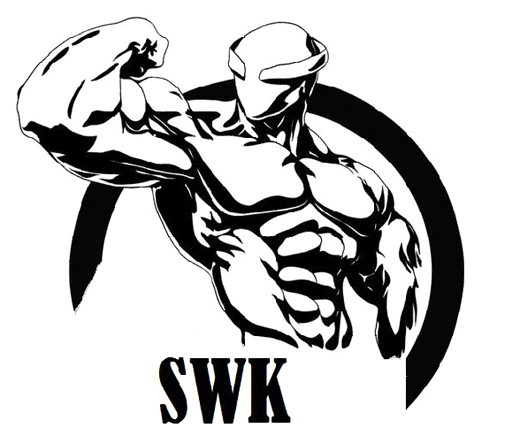

Меню

Что такое Street Workout?
Street Workout (с англ. «уличная тренировка») – разновидность физкультурных занятий, при которой все упражнения выполняются преимущественно на уличных конструкциях, таких как турник, брусья, горизонтальные и вертикальные лестницы, вкопанные колеса, лавки и т.п., или без них, используя вес своего тела.
Street Workout еще называют «уличным фитнесом», но чаще просто «воркаутом».
При ответе на вопрос «Что такое воркаут?», не совсем правильно будет называть его видом спорта. Официально он пока таким не признан ни в одной из стран мира, хотя по нем устраиваются даже международные чемпионаты. Учитывая его массовость и рост количества поклонников, не исключено, что это в скором времени может измениться.
В чем польза и преимущества воркаута?
Воркаут – это не только доступность для практически любого человека. Он имеет и ряд других преимуществ и полезных свойств. Уличные спортсмены, как еще себя называют поклонники воркаута, приобретают высокие физические показатели и рельефные фигуры (особенно торс) без такой нагрузки на сердце, какую можно по неопытности получать при силовых тренировках с отягощениями. Кроме того, большинство людей при занятиях приобщаются к активному и здоровому образу жизни.
История воркаута
Многие ребята занимались спортом на турниках, брусьях и других конструкциях еще во времена Советского Союза. Именно еще в СССР зародилась традиция размещать спортивные площадки (с турниками, лестницами и другими конструкциями) во дворах возле многоквартирных домов. Эта практика сохранилась и поныне. Требования к площадкам регулируются законодательными нормами, хотя сама их постройка не является обязательной. В наше время спортивная площадка – один из немногих оставшихся инструментов приобщения молодежи к занятиям спортом и активному образу жизни, так как остатки системы советского культпросвета давно разрушены.
В учебных заведениях были введены нормативы по подтягиванию, отжиманию, а также активно пропагандировалась польза от занятий спортом. Подобные нормативы сдают и сейчас в учебных заведениях, а выполнить норму без подготовки под силу далеко не всем.
Все это сыграло немалую роль для закладки фундамента появления воркаута, хотя пришел он к нам, скорее, не из Союза, а из Америки.
Еще с 1993 года на территории США активно развивалось направление спортивных занятий под названием Calisthenics, при котором для тренировок в основном использовался вес собственного тела. В начале 2000-х годов обмен информацией стал доступнее благодаря интернету, и это способствовало также более активному обмену ей между СНГ и западными странами. В это время начали появляться и набирать популярность видеоролики с записями, где афроамериканцы, обладающие внушительными фигурами, выполняли разные трюки на турниках, брусьях и других конструкциях или без них. Многие из этих видеороликов назывались гетто тренировками (Ghetto Workout). Вероятной причиной такого названия послужило то, что сами участники роликов проживали в гетто-районах (районы в крупных городах, населяемые этническими меньшинствами). Но точное происхождение названия таких роликов могут утверждать лишь их автора. Часть же видео подписывалась как Street Workout, это название прижилось, поэтому является более употребляемым и известным сейчас.
Такие видеоролики распространялись на телефонах еще во времена ИК-портов, вызывая большой интерес у молодежи постсоветского пространства. Постепенно росло как само количество подобных видеозаписей в сети, так и число поклонников данного направления. Потом начали создаваться отдельные сайты посвященные конкретно уличным тренировкам, начали проводиться соревнования, появились знаменитости среди поклонников воркаута, довольно часто стало упоминаться о этом направлении и по телевидению. Датой возникновения самого Workout(а), как отдельного направления, считают 2008 год. Распространен он среди стран СНГ, а более всего в России и Украине, на западе же подобные занятия остались в основном под прежними названиями, такими, как «Ghetto Workout».
Виды воркаута
Классификация воркаута включает два основных направления (стиля):
- Street Workout – разновидность, при которой в основном тренируются выполнять разнообразных элементы, постепенно разучивая новые, усложняя и доводя до совершенства старые.
- Ghetto Workout – направление воркаута, когда упор делается на тренировку силовых показателей, т.е. увеличения числа возможных повторов в отдельных упражнениях (разные виды подтягиваний, отжиманий) или времени выполнения статических упражнений (задержка тела в каком-либо положении, которая требует усилий). Но можно встретить также определение Гетто воркаута, как занятия, которое развивает еще и ум, а также не требует турника и других конструкций, а подразумевает возможность тренировок в любых условиях и в любом месте.
{kind=link}
{kind=link}
Другие разновидности и классификации
Handstand – дополнительная разновидность воркаута, при которой тренировки посвящаются стойкам и ходьбе на руках, отжиманиям в такой стойке, силовым выходам в стойку (спичагам), подпрыгиванием на руках и т.п.
{kind=link}
Можно также встретить и иные классификации. Например, дворовая гимнастика иногда рассматривается, как одна из разновидностей воркаута. В некоторых случаях к воркауту относят и Джимбарр (Gimbarr). Это тоже вид уличного спорта, пришедший из Колумбии. Но он скорей является отдельной дисциплиной. Выполняемые элементы в джимбарра требуют развития не так силы, как координации движении, гибкости, настойчивого разучивания упражнений, многие из которых очень опасны и часто выполняются с приминением страховки. Он официально признан видом спорта на своей родине – Колумбии. Но в СНГ соревнования по Джимбарре обычно проходят, как по одном из стилей воркаута.
{kind=link}
Чаще всего ребята, занимающиеся на спортивных площадках, не относят себя к отдельному стилю уличных тренировок. Они просто разучивают элементы, которые им интересны и работают над силовыми показателями.
Copyrite © 1011. Все права защищены.